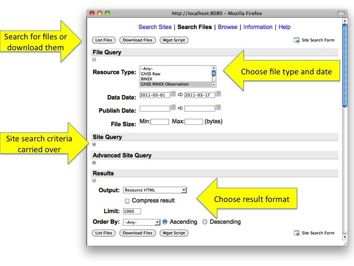

GSAC Files Search
The file search form adds file specific search criteria to
the site search form. One can search on file type, date, etc.

By default the results of a search are shown as a web page but
there are services to access the files in a number of ways.